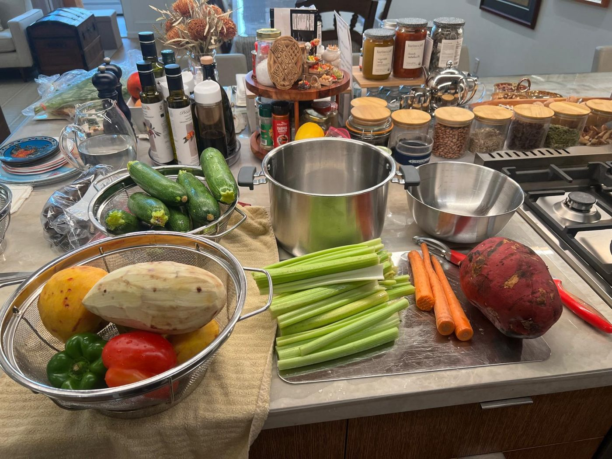
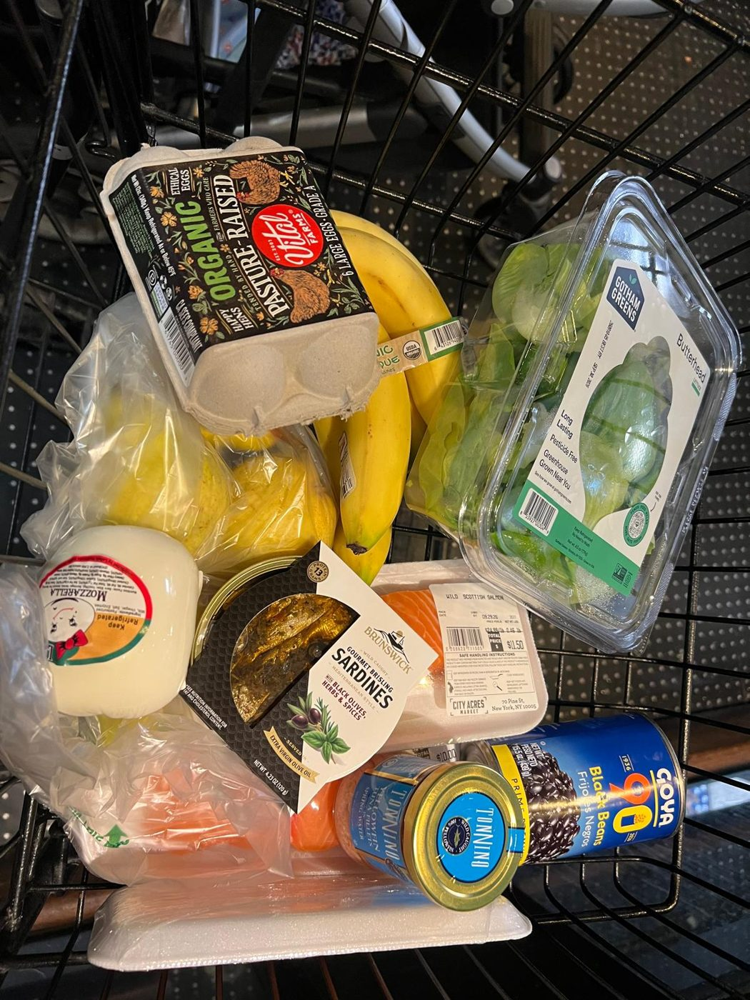
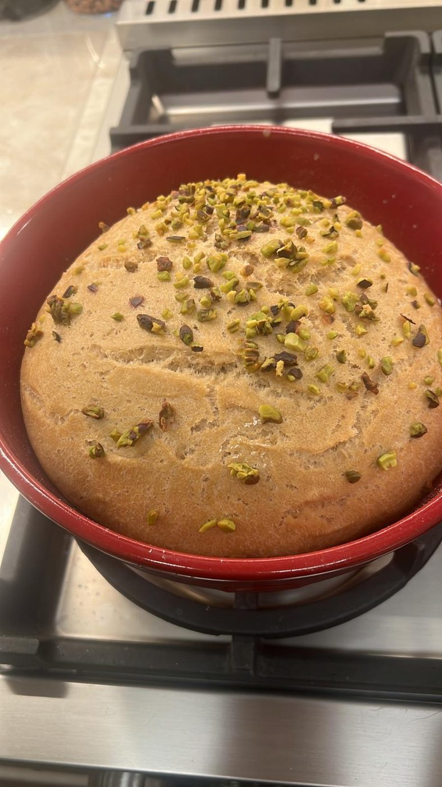

Fischer Kitchen: Tasteful, nutritious cooking at home,
with fewer ultraprocessed foods
Fischer Kitchen is about food and the places it comes from, cooked simply by somebody who works.
Travel is not a second subject sitting beside the food. It is where the food comes from and why it tastes the way it does. Sicily, Crete, Montauk, and a supermarket aisle in New York are the same story told at different distances.
The cooking stays plain. One protein, one vegetable, one starch, one fat. Nothing assembled, nothing engineered. Eating with as little processed food as can be managed, sourcing what is worth sourcing, and buying the rest off the shelf like everybody else.
Cook, even if you don’t think you’re great at it (I do my best, that’s all we can do!)
Kitchen organization
If you live in NYC, let’s organize your refrigerator and go through your kitchen. Contact for hourly rate.